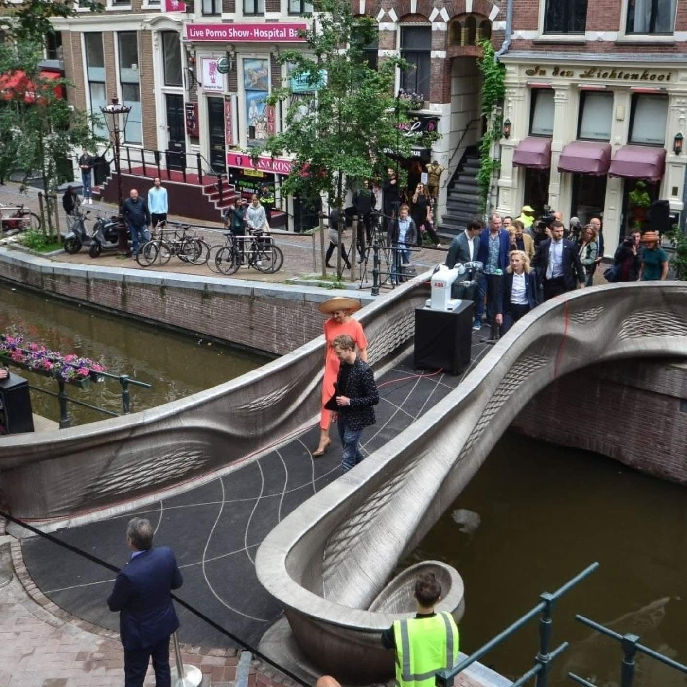

מהפכה מעל המים:
פורסם במקור ב LinkedIn
מהפכה מעל המים:
באמסטרדם חנכו את גשר הפלדה הראשון בעולם שהודפס במדפסת תלת מימד!
באורך 12 מטרים, עשוי מ-6 טון נירוסטה, והודפס במשך חצי שנה על ידי רובוטים רתכים בטמפרטורה של 1,500 מעלות.
הגשר לא רק מרהיב, הוא גם חכם:
חיישנים מוטמעים בו אוספים מידע בזמן אמת, ומייצרים תמונה דיגיטלית שמאפשרת לנטר את מצבו באופן רציף לאורך הזמן.
פריצת דרך טכנולוגית שמראה איך נראה העתיד של תשתיות.
#הנדסה #בניה
